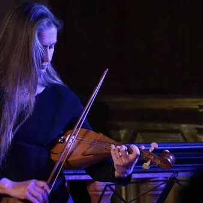

sab 17 ott · dalle 21:00
FEMART - Festival MusicAntica e Arti - APPUNTI DI VIAGGIO Dalla Tela il Suono - Gli angeli musicanti del Pordenone
Prende il via "Dalla tela il suono" il nuovo ciclo che esplora il legame tra arte e musica attraverso gli strumenti raffigurati nelle opere pittoriche. Il primo appuntamento è dedicato alla pala del Pordenone San Gottardo in trono tra i santi Sebastiano e Rocco (1525), dove due…
 Indicazioni
Indicazioni
- Costi e prenotazioni
- Costo non indicato · Prenotazione non indicata
- Programma
- Programma da verificare. Apri la fonte ufficiale per orari e possibili aggiornamenti.
- In caso di maltempo
- Nessuna indicazione specifica pubblicata.
- Note
- Acquisito automaticamente dalla fonte.
L’EVENTO
Descrizione completa
17 ottobre ore 16
Pordenone, Museo Civico d’Arte
Ingresso
Biglietto 1€
Acquisto in loco
Introduzione a cura di Fabiana Iurig, Conservatrice Museo Civico d’Arte
Elisabetta De’Mircovich, voce e ribeca
Maurizio Da Col, liuto
Prende il via "Dalla tela il suono" il nuovo ciclo che esplora il legame tra arte e musica attraverso gli strumenti raffigurati nelle opere pittoriche. Il primo appuntamento è dedicato alla pala del Pordenone San Gottardo in trono tra i santi Sebastiano e Rocco (1525), dove due angeli con liuto e ribeca diventano il punto di partenza per riscoprire la pratica musicale del Rinascimento con Elisabetta de' Mircovich e Maurizio Da Col.
San Gottardo in trono tra i Santi Sebastiano e Rocco
Giovanni Antonio de’ Sacchis detto il Pordenone (Pordenone 1483-84 – Ferrara 1539)
L’opera fu commissionata al Pordenone dalla confraternita dei Santi Gottardo, Rocco e Sebastiano il 13 ottobre 1525 per l’altare maggiore della chiesa di San Gottardo, accanto alla quale fu poi edificato il convento dei Cappuccini. Al centro della scena siede San Gottardo da Hildesheim, vescovo benedettino del X secolo canonizzato nel 1131. Ai lati, i Santi Sebastiano e Rocco, tradizionalmente invocati contro le epidemie pestilenziali. Le figure, monumentali e rigorose, si collocano all’interno di una maestosa abside architettonica. La geometria dei grandi cassettoni del soffitto è scandita da una sequenza prospettica di colonne che amplia in senso illusionistico lo spazio. Ai piedi del trono, due angeli musicanti con liuto e ribeca introducono una nota di grazia e leggerezza all’interno della solenne costruzione sacra.
Bartolomeo Tromboncino (1470–1535)
Poiché volse la mia stella – frottola
Per dolor mi bagno el viso – frottola
Frottole intabulate da sonare organi , intavolature di Francesco Bossinensis, Ottaviano Petrucci , Venezia, 1509
Hans Neusidler (1508–1563)
Mille Regretz (Josquin Desprez) – chanson intavolata
Ein newes Lautenbüchlein , Norimberga, 1540
Philippe Verdelot (ca. 1480–ca. 1532)
Vita della mia vita – madrigale
Il primo libro de' madrigali , Adrian Willaert , Venezia, 1536
Pierre Attaignant (ca. 1494–1552)
Basse Danse
La Magdalena – Recoupe – Tourdion
Ostinato vo' seguire – frottola
Programma sfogliabile su Calamèo
IL PROGRAMMA
Programma e orari
Appuntamenti raccolti dalle fonti elencate. Dove manca un orario, non è ancora disponibile in questa scheda.
Programma pubblicato
- Dal 2026-10-17 al 2026-10-17
INFORMAZIONI UTILI
Prima di partire
- Controllare la fonte prima di partire.
ORGANIZZAZIONE